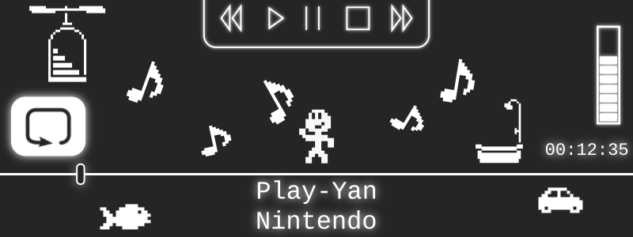
More Mobile Multimedia Madness
Towards the end of the Game Boy Advance's lifetime, it had proven itself quite capable of handling all sorts of different media. Obviously, as a handheld console, it excelled at video games, becoming a 2D powerhouse with graphics and artstyles still fondly remembered today. As companies like Majesco and AM3 demonstrated, the GBA could output video given the right compression schemes, squeezing TV episodes, anime series, and full-length movies down to pint-sized resolutions. Separately, Kemco turned the GBA into a full-fledged music player and recorder, taking on MP3s despite the handheld's reputation for decent but not stellar audio. At the time such products came to the Game Boy, they were somewhat revolutionary in their approach, aiming to be cheaper due to their reliance on a popular, widely available platform and taking advantage of its simple and intuitive form-factor. Despite the GBA's limitations, each company managed to push Nintendo into the world of portable, digital media.
At the start of 2005, however, the cycle was not yet complete. While the GBA could handle audio or video individually, no single product brought both of them together in one package. The remedy this, Nintendo themselves directly stepped onto the field. On February 21 on that year, the Japanese gaming giant released the Play-Yan, a special GBA cartridge that would play music or video files specified by the user. Here, with the help of an SD card, people could load up and play their very own collection of shows and songs. Today, with our advanced smartphones – all of which are typically capable of displaying HD content – it may seem strange for people in the past to have suffered watching video on such tiny screens with questionable lighting. Keep in mind, however, that portable video players were hard to come by at this time. They were expensive and had limited options for consumers. I personally remember getting a Creative ZEN Vision W circa 2007. At 480x272, 30GB, and a $300 USD price tag, it was rather top of the line. In this kind of environment, the Play-Yan had its place as a fairly low-cost alternative, coming in at 5000 yen (approximately $45 USD).
The Play-Yan marked the first and only time Nintendo tried to offer an all-in-one media player for one of their portable systems. Although they brought built-in music players to the DSi and 3DS later on, they omitted videos, leaving that to third-party accessories and unofficial flashcart+homebrew combos. More recently, on the Switch, these functions are left to dedicated apps on the eShop. Unfortunately, the Play-Yan never fully left the East, remaining a Japanese and Chinese exclusive. Despite being a fairly thorough and polished effort to turn the GBA (and to an extent, the DS and DS Lite as well) into a compotent mobile media player, most of the work Nintendo put in gradually faded away afterwards. As phones grew more and more capable, there was less need for handheld consoles to offer this sort of functionality.
Even though the Play-Yan was a blip in Nintendo's grand history, it still has a tale that needs to be explored, examined, and ultimately emulated. Once again, in my quest to document and preserve all of the Game Boy's licensed hardware, I found myself coming up with some pretty wild ideas. I've already recreated a music player with the GBA Jukebox, but now I was thinking about doing yet another one, this time with the ability to play arbitrary video files (not just ones preprogrammed on a ROM chip or some other storage). Additionally, I'd have to reverse-engineer a fairly complex cartridge with special hardware that had no existing documentation. There was also the potential that I'd have to deal with various audio/video codecs and SD card interfaces just to transform a video game emulator into a working multimedia player. Taken altogether, that's kinda, sorta, absolutely nuts. But if your goal is to emulate all the things, you don't leave anything behind.
Prelude of the Play-Yan
I started researching the Play-Yan over 3 years ago, all the way back in May 2020. At this time, COVID-19 was really ramping up, forcing a lot of travel restrictions globally. The reduced amount of commercial flights affected Japan Post, which provides some of the cheapest, fastest airmail out of that country. At the time, the shipping situation was pretty grim, so items foreigners bought online were held indefinitely until other, admittedly more expensive solutions (Fedex, DHL, etc) could be established. Unfortunately, I got caught up in all of this. Having won an auction for a complete-in-box copy of the original Play-Yan, I found my item stuck in a warehouse for a couple of weeks. Thankfully, an opportunity to ship it eventually arrived, albeit at a high price.
The Play-Yan itself is a somewhat larger than normal GBA cartridge. It comes in all black and is roughly the same size as Boktai's Solar Sensor carts or the accelerometer carts used for Yoshi Topsy Turby/Univseral Gravitation. A raised notch at the top (or bottom depending on how you view it) sticks out, making a little protrusion when fully inserted into a GBA or original DS. From this little nub-like area, a 3.5mm headphone jack is exposed, allowing users to listen to higher quality audio as opposed to the GBA's native sound system. On the side of the Play-Yan sits a very thin slot where an SD card slides in. Helpfully, a slightly engraved icon indicates the orientation of the card.
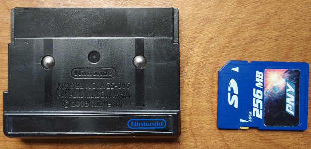 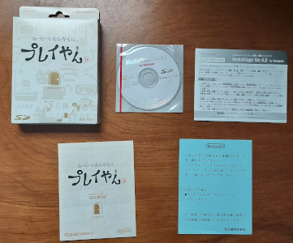
The Play-Yan came in its own unique box. It included a CD with video conversion software for Windows XP.
Nintendo designated the Play-Yan with the model number AGS-006, making it an official product in the GBA SP lineup. It was initially promoted as compatible with only the SP and the newly released DS. In truth, however, it worked just fine with the original GBA. There were concerns about the battery life of each system when using the Play-Yan, so out of caution, Nintendo likely limited its "recommendation" to handhelds that had rechargeable lithium batteries. This has no bearing when it comes to emulation, but it's a fascinating tidbit about the company's decision-making and their occassional tendency to play things safe, so-to-speak.
Perhaps most interesting of all is the Play-Yan's approach to playing audio and video. Inside, it has dedicated components for decoding stuff like MP3 and ASF files, specifically a chip called the Alphamosiac VC01. The VC01 (or VideoCore 1) was a coprocessor used in mobile devices to provide efficient, low-power support for multimedia. This version in particular found a home in Samsung phones but was chosen for the Play-Yan as well. Rather than rely on the GBA's CPU to process audio/video, the task was left to Alphamosiac's hardware. While the GBA could have conceivably decoded media files itself, it would have needed a bunch of memory for buffering if quality were a factor. The VC01 was essential here, handling the decoding process and basically allowing the GBA to stream bits of sound and video frames at fixed intervals. VideoCore technically lives on today, with more advanced versions powering products such as the Raspberry Pis.
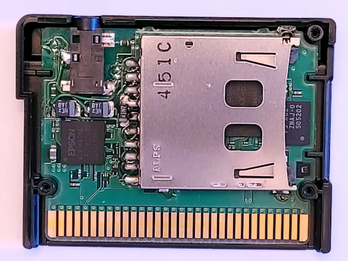
Take a look at the special hardware that powers the Play-Yan.
Cartridges with special hardware, in my personal experience, are some of the most difficult things to reverse-engineer. They're very much like miniature black-boxes. With Link Cable accessories, it's easy enough to capture the entire transmission for the peripheral and the Game Boy. From there, any protocols and data transfers can be observed and cracked. It is much more difficult to intercept communications between the Game Boy's CPU and the cartridge, however. Without resorting to complicated setups like hooking up a logic analyzer directly to the system's address pins, there's no clear-cut way of peeking into what kind of data the cartridge uses for input and output. Instead, other methods are required, which primarily involve poking and prodding bits of the cart's ROM for information. The software itself should contain all the code necessary to interact with any unique hardware in the cart. In theory, the Play-Yan's code provides a blueprint for its entire operation.
This route is quite slow, but it works. Software is complicated and rarely straightforward, so often I have to use a bunch of tricks, such as focusing on identifying I/O registers and coming up with small, pinpoint homebrew tests. That's how I've managed to figure out other cartridges such as the Advance Movie Adapter and the Music Recorder. With the Play-Yan, I immediately made a ROM dump of my copy and verified it against No-Intro's database. Next, I ran the ROM in several emulators, including VBA-M, mGBA, GBE+. The purpose was to watch each of them and see if one did anything the others didn't. Each emulator, however, got stuck on the initial "loading" screen. On real hardware, the Play-Yan waits a bit, presumably setting things up with the SD card, then it boots into a menu where users can play music or videos. None of the emulators could even reach that basic point.
I guessed that the Play-Yan was doing some sort of initialization process. The software likely sent some data to the cartridge and the cartridge responded in a certain way. Without that much emulated, the ROM would freeze indefinitely. As my first step to solving this problem, I started logging any reads or writes to any unusual addresses. Those generally represent special input or output that cartridges use. As a rule-of-thumb, writing to any address normally reserved for ROM (0x8000000 - 0xDFFFFFF on the GBA) is suspect, because it's supposed to be read-only under normal circumstances. Most of the reads and writes didn't seem all that consequential, since the Play-Yan's software kept executing regardless of the results. However, it did halt at one address, 0x9000006, constantly reading it over and over again.
After opening up the debugger in GBE+, I examined the code responsible for handling that address. It only read a single 8-bit value and checked to see if Bit 7 was set as a "1". This appeared to be a flag of some sort indicating a kind of "I'm Ready" status. This byte was in unused memory, so GBE+ was returning zero by default, thus the Play-Yan got stuck here. Manually editing this byte got the Play-Yan to boot up a bit further, with another series of reads and writes to unknown I/O registers. What really caught my attention was a massive series of writes with all kinds of different values to a new region located at 0xB000100 - 0xB0002FF. It was huge, spanning thousands and thousands of log entries, looping over that 512-byte area over and over again. There were no clues in the ROM or code about what this all meant, but it was clearly important. With a bit of thinking, I used my knowledge of the Play-Yan to guess what was happening.
The Play-Yan loads firmware that is necessary for the VC01 to run and process media files. This was upgradable too; Nintendo added MP4 video support a few months after the original Play-Yan launched. Users could place a simple file on the SD card called playan.fup that the cartridge would then upload internally. I wondered if the Play-Yan was in fact trying to upload some kind of default firmware. It was impossible for GBE+ to be loading any sort of firmware upgrade file, since nothing about the Play-Yan was emulated at all yet. However, Nintendo has a history of uploading default firmware for some of their hardware. The Wii Speak accessory, for example, transfers its own firmware to the Wii every time it boots up. One advantage of this approach is that firmware upgrades will never completely brick the unit, since the hardware can fall back on the default once everything is reset.
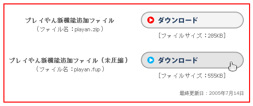
The Play-Yan loads built-in firmware from ROM first before looking at the SD card for updates. Nintendo provided one such update on their website.
To confirm my theory, I looked for the data's source. All of the bytes came from the Play-Yan's ROM, and the first portion seemed to roughly match the same data found in playan.fup. This convinced me that the Play-Yan was loading default firmware from ROM and passing that to the VC01. After carefully studying some of the I/O registers being written before each transfer, I figured that the Play-Yan used a 32-bit address to determine where inside the VC01's firmware it should write data. The register at 0x9000006 showed up again before writing firmware data, once more checking for Bit 7. At this point, I assumed its role was to make sure firmware was ready for writing. I named it PY_STAT for convenience.
I quickly threw together some code in GBE+ that would handle all of this. I couldn't do any more serious work unless my emulator had partial support for what I'd learned so far, otherwise I'd always be manually fiddling around with different bits in the debugger. I didn't know how large firmware should have been, but I guessed a size of 1MB sounded about right. I never observed any firmware address higher than that capacity. Once GBE+ was updated, I noticed in the logs that the Play-Yan hung at one particular part. This time it was trying to read the I/O register at 0xB000012. The code behind it seemed to be waiting for Bit 4 of its value to be set to "1". Adding this into GBE+ allowed yet another massive set of transfers to occur. This time, it was a bunch of reads from the memory region at 0xB000300 - 0xB0004FF. After these reads, it once again came to a complete stop. No more I/O registers were accessed, and the Play-Yan just sat there idly at a loading screen.
Taking yet another guess, I assumed the Play-Yan was now trying to read back firmware. This made sense, as it wanted to verify whether the firmware it had written was in fact valid. After disassembling the code, I saw that the Play-Yan was doing just that, comparing each byte it read with each byte it had written, one by one. If even one byte was out of order, it would abort and exit into an endless loop. GBE+ would need to read back firmware, which wasn't too difficult once I realized how it was supposed to work. I thought if GBE+ passed this test it would finally be ready to move past the loading screen and boot into the Play-Yan's main menu. Unfortunately, that was not the case. While the firmware validation was correct, afterwards the Play-Yan halted yet again. It wasn't frozen, but nothing showed up in my logs. It was as if it were waiting for something... but what?
Revenge of the Game Pak Interrupt
I suspected that the Play-Yan was waiting for a specific type of hardware interrupt to occur. It could have only been my archnemesis, the dreaded Game Pak interrupt. As a refresher, hardware interrupts are events that happen within a given system. On the GBA, it's usually stuff like V-Blank (screen referesh), H-Blank (1 horizontal row of the screen is done), completion of Direct Memory Access transfers or serial (Link Cable) transfers, and timer overflows. Ordinarily, all an emulator needs to do is tell the CPU that an interrupt happened, which basically comes down to flipping just a handful of bits in memory. As long as the interrupt is correctly flagged in a timely fashion, the emulated software will run just fine. However, Game Pak interrupts are in a different class from its peers for two primary reasons.
First, Game Pak interrupts are triggered by external hardware, usually when a specific process within the cartridge is complete. For undocumented hardware, however, it can be incredibly difficult to know what the process was exactly. It could literally be anything. While the other interrupts all focus on well-defined events, the Game Pak interrupt is completely open-ended. The e-Reader uses it for scanning card data. The Advance Movie Adapter uses it for streaming audio/video data. The GlucoBoy uses it for accessing data from blood testing results. A cartridge can use the Game Pak interrupt for much more too, as long as the hardware is designed appropiately. Decrypting private files? Downloading info over Wi-Fi or Bluetooth? Measuring the Shapiro time delay of radar signals bouncing off of Venus?? Reheating day-old tacos?!? All of that is technically possible, and theoretical cartridges could use the Game Pak interrupt to alert the GBA when it needs to start processing something.
Secondly, Game Pak interrupts might cause the hardware to send or return all kinds of data. The type of data would depend on the purpose of the cartridge. The big issue though is that such data is arbitrary. It can be whatever the developers need it to be, which is a pain for reverse-engineering. There's no singular format the data would have to follow, no standard proceedure on how to access it, and no guides on what any of it means. Game Pak interrupts essentially give the cartridge free reign to do as it pleases. As a result, hardware like the Play-Yan can make the rules without telling anyone what they are; the rest of us just have to guess.
These two factors make the Game Pak interrupt very troublesome to deal with when researching unique cartridges. The plain and simple truth is that they're evil. Every time I encounter them, I pray that the cartridge doesn't use these interrupts frequently, and that it doesn't need much (if any) data handling. They can be an absolute nightmare to debug and challenging to design proper homebrew tests. At this point in my journey, after having dealt with so much hardware, I don't fear much diving into the unknown. But Game Pak interrupts? Those things scare me...
Naturally though, my worries were overblown, right? There was no way the Play-Yan would be that complicated. It probably just triggered Game Pak interrupts whenever there was a file from the SD card being loaded or something simple. Couldn't be that bad, yeah? HAHA! No. The Play-Yan turned out to be a master-class in using Game Pak interrupts, prompting nothing but agony and angst at each and every turn.
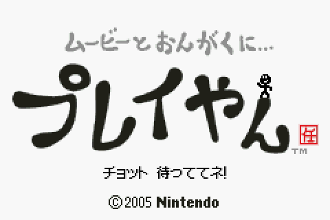
This miserable loading screen was the only thing I saw for a long, long time. I hate Game Pak interrupts.
And why is that little stick figure guy smiling? Why's he so happy? I'm not happy! It's like he knows something I don't about the Play-Yan!
To begin, I started poking around what happened when I forced a Game Pak IRQ to happen. With a special hotkey, GBE+ would send the IRQ to the emulated CPU. Afterwards, I observed what sorts of I/O was read or written. To my dismay, the Play-Yan's interrupt handling code read from a bunch of sequential addresses in the 0xB000300 - 0xB00031F range. So, it looked like the Play-Yan was trying to read data once the Game Pak IRQ fired. The data could have been anything, and if GBE+ didn't get it correct, the Play-Yan would be stuck on that loading screen forever. But how was I supposed to know what data the Play-Yan wanted?
The obvious answer is homebrew; make a program that can check the values manually. The homebrew has to run while still having access to the GBA cartridge. Naturally, the solution would be to write homebrew for the Nintendo DS and access the Play-Yan as a Slot-2 device. Unfortunately, I kept getting weird data when reading certain I/O. The Play-Yan was perfectly capable of working on a DS or DS Lite, but sometimes Slot-2 hardware requires specific memory timings to work correctly. In any case, the results were inconsistent. A second method was then chosen: loading homebrew via MultiBoot. During the boot process, The GBA BIOS can receive small programs from the serial port. The MultiBoot binary can be sent through regular Link Cables or with the GBA-to-GCN cable. Typically, MultiBoot is used for multiplayer modes or downloading minigames, but it's very useful for loading homebrew onto a live GBA. The goal was to send the homebrew to the GBA while the Play-Yan was inserted and then start testing things directly. Although the MultiBoot payload exists entirely in RAM, it has access to everything on the GBA, including ROM data and I/O if a cartridge is inserted.
It was a good idea that seemed promising at first. During my initial tests, all of the hardware registers in the Play-Yan seemed to work as expected. I made a huge, complicated piece of homebrew that replicated each and every read/write the Play-Yan did up until it froze waiting for a Game Pak interrupt. I even tried to simulate some of the delays, particularly when writing firmware. It was my belief that the first Game Pak interrupt fired after the Play-Yan had received the firmware, loaded it, and began executing it internally. It would signal to the GBA's CPU that everything was "ready to go" and the rest of the Play-Yan's code would run. I thought my elaborate homebrew solution just had to wait for the Game Pak interrupt and read back the data it needed. But all it did was sit there in a permanent pause. Like a package lost in the post, the interrupt simply never came...
This was quite baffling, as the homebrew followed all reads and writes perfectly. At least on paper, everything matched up. There was something missing, but whatever it was, I couldn't see it. Changing tactics, I used the powerful decompiler Ghidra to peer deep into the Play-Yan's ROM, turning ARM and THUMB instructions into readable C code. With a bit of searching, I found the code responsible for reading data after a Game Pak interrupt. While this should have been a small victory, in reality it was another dead-end. The code here wasn't straightforward at all. As far as I could tell, it first read back a single 32-bit value followed by various parameters. There was something like close to 20 or more different codepaths to follow based on that 32-bit value, with more branching paths based on those parameters, with more branching paths based on existing variables from other parts of the Play-Yan's code, with more... well, you get the idea. There wasn't a single area of code that stood out and said "this gets the Play-Yan to boot". Unless I was willing to spend a few months sorting through all of the code, I wasn't going to get anywhere anytime soon.
Ghidra definitely helped me out here, but it alone wasn't enough.
Hack Attack Tactics
Everything came to an abrupt halt. I couldn't move forward unless I knew what data the Play-Yan wanted after the Game Pak IRQ was sent. I put off research on the Play-Yan for weeks, then months, then a few years. Sometimes it's better to work on things you can make progress on rather than endlessly banging your head against the same old problem. While ignoring the Play-Yan, I was able to complete at least 8 more projects. This kind of roadblock highlights just how difficult it can be to figure out cartridges with unique hardware in them. If only I could somehow gaze into the Play-Yan during the boot process, that would have solved this dilemma. Sadly, there was no simple or straightforward way to capture data from the cartridge while it was running, at least, not with the tools I was most familiar with. Once the GBA BIOS finished, it handed over all control to the Play-Yan's ROM, at which point there was no room for my homebrew software to interfere or collect information about what was happening. Or so it seemed...
Frustrated by this stalemate, I started thinking of possible ways to make homebrew capable of snooping on the Play-Yan's Game Pak IRQs in real-time. As mentioned previously, once the ROM's code runs, it basically assumes complete control. On the surface, it would seem that either my homebrew could run or the Play-Yan's code could run, but they couldn't coexist easily. However, I was struck by a crazy idea, a long shot that would turn the tables on those pesky interrupts once and for all. What if my homebrew could hijack the Play-Yan's ROM, almost like a virus?
To elaborate on how this was going to work, it's important to know how GBA software deals with interrupts in general. When an interrupt occurs, the CPU typically jumps to the BIOS, which causes another jump to the software's interrupt handling code. Often, this is a large if... else if... section that further jumps to specific functions designed to handle individual interrupts. Interrupt handling code is often copied from ROM to RAM because reading ROM data is slow and not particularly helpful for potentially time-sensitive interrupts. My homebrew would hijack this area of RAM and write its own interrupt handler. It would be mostly the same, except for when it came to Game Pak interrupts, but more on that in a bit.
For the hijack to be successful, it would have to write this altered interrupt handler, then hand over control to the Play-Yan's ROM. The Play-Yan would execute my interrupt handler instead of its own, and the program wouldn't have a clue that anything was any different. There was just one catch; the hijack had to jump to a specific section of code within the Play-Yan ROM, the point after the Play-Yan was supposed to write its interrupt handler into RAM. Additionally, the hijack would have to mimic a lot of the Play-Yan's initial code related to setting up a bunch of internal variables.
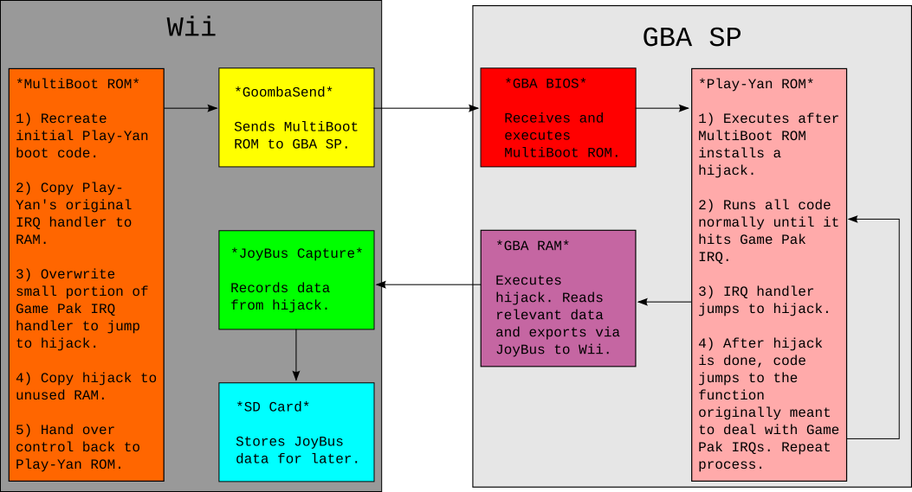
A diagram visually demonstrating the hijack technique. It's actually kinda nuts.
I began constructing my "viral" homebrew by recreating the Play-Yan's boot code, using ARMv4 assembly code. This was mundane but important stuff like setting up a stack pointer and several function pointers. It only took about 25 CPU instructions to do so; afterwards I started adding my own magic. I copied my own interrupt handler into the RAM area where the Play-Yan normally expected its own. Additionally, I copied over code that would monitor the data read during Game Pak IRQs and export that data via the Link Cable (more on that craziness in a moment). The tricky part here was deciding where to put the monitoring code in RAM. Software will shift, delete, and overwrite areas of RAM frequently. There's no real way to guarantee that my custom code wouldn't be changed somewhere down the line. Thankfully, I managed to locate a small bit of RAM that never seemed to change after boot, at least according to what GBE+ told me. After that, the homebrew forced the GBA to jump back to the Play-Yan's ROM, where it would begin executing code like normal, as if it had written its own interrupt handler.
The homebrew was loaded onto a GBA SP via MultiBoot using a hacked Wii I had lying around. At first, I only wanted to test whether my idea would even work. It just had to boot up and show the Play-Yan logo. To my delight, everything worked perfectly. For the next phase, I had to actually receive the data my homebrew virus grabbed and transferred. This is where things got really interesting. The homebrew sent data it recorded from Game Pak IRQs over the Link Cable using the JoyBus protocol. The GBA can natively handle limited transfers when talking to a GameCube or Wii host. My virus was already handling that from the GBA side, now I just had to do the same for the Wii. Thanks to my earlier work with the GameCube Pedometer, I had familiarized myself with making Wii software and specifically dealing with JoyBus peripherals. In short order, I had compiled a Wii program that would capture the Play-Yan's Game Pak IRQ data and dynamically save it to the Wii's SD card. With this method, I could grab massive amounts of data in real-time if necessary.
Now came the real test. The entire process was quite involved. The first step was booting up the hacked Wii to transfer the MultiBoot payload to the GBA. When the viral homebrew started running, it displayed a white screen and waited for a single A-Button press before continuing. This manual initiation gave me enough time to switch the Wii over to my JoyBus recording program. The GBA-GCN cable had to be attached at all times, and interestingly only a GBA SP model would work for this situation. The Play-Yan's plastic shell is slightly larger than a normal GBA cartridge. As such, when loading it into an original GBA, it partially blocks the Link Cable port and makes the GBA-GCN cable rather difficult to plug in. GBA SPs load cartridges from the bottom and expose the Link Cable port on the top-side, making it ideal for this tricky data exfiltration operation. Technically a Game Boy Micro could work too, but that's complicated (also I don't have one!)
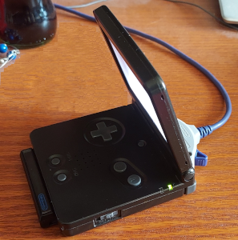 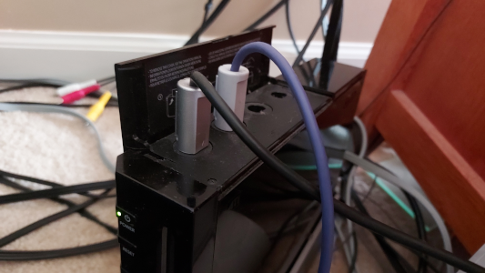
It's a bit unconventional, but MultiBoot is one of the only ways to really run homebrew tests on the Play-Yan.
The moment of truth arrived. The Play-Yan booted up, displayed its logo for a time, then the screen flickered once, twice, then several more times, but the program kept running. After a while, it came to the main menu normally. I looked up at my TV and saw several log messages from my JoyBus capture homebrew; it had successfully recorded several data packets! Finally, perhaps now there would be some amount of progress, hopefully. Once everything was saved to the SD card, I grabbed it, stepped over to my desktop computer, and analyzed the binary file. Just what kind of data did the Play-Yan actually need to boot?
There was definitely some sort of pattern to it. The first 4 bytes appeared to be a command. I instantly recognized them as the 32-bit values I'd seen earlier when exploring the Play-Yan's code in Ghidra. Back then, I had no idea what purpose they served, but now at least I had some clue. Unfortunately I couldn't yet tell what each value did. Some of these supposed commands had unknown parameters too. For the time being, however, I modified GBE+ to return these values when responding to Game Pak IRQs. It was a dirty hack, but I just needed to see if this was enough to get the Play-Yan running in an emulator. Since there were 5 different commands issued one after another, I had to manually trigger the IRQs after delaying a set number of frames. I didn't know how exactly the Play-Yan was even generating these Game Pak IRQs, but everything I knew about the Play-Yan suggested that it would wait indefinitely for them. As long as they didn't happen too fast one right after the other, it should have been okay.
The Play-Yan started up in GBE+, and then amazingly, it started displaying messages in Japanese at the bottom of the screen detailing the boot process, just like the real thing. The messages continued and it plopped the emulator right into the main menu! At long last, I'd finally gotten somewhere. This proved to be a real breakthrough. From here, I could start probing the rest of the Play-Yan's mysteries, and I now had the tools to examine Game Pak IRQ data. However, this all underscores just how complex the Play-Yan was. Even with all the hardship I'd experienced so far, that was just the surface. Plenty of other challenges remained.
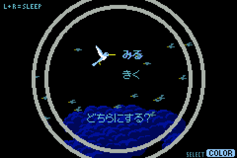
It took forever to reach this simple menu. Thanks Nintendo!
Menu Mayhem
The Play-Yan offers two entries on its main menu: Music and Videos ("Watch" or "Listen") . Entering either of those spawned a host of new Game Pak IRQs. I carefully recorded the data from these using my viral homebrew and replayed them in GBE+. I started developing a system where different groups of Game Pak IRQ data were fed to the emulated Play-Yan based on its current actions. It worked like a big state machine. Selecting Music, for example, would launch a series of IRQs along with their data, moving from one to the next like a chain reaction. At the time, I was mindlessly copying the high-level behavior of these IRQs because I didn't know exactly how the Play-Yan really generated them. Although it was a temporary solution, it managed to hold up pretty well during the early stages of Play-Yan emulation.
One of the first problems I encountered with the Music and Video menus was that they complained about not being able to find files. This was understandable because GBE+ didn't emulate any filesystem, and the data from the Game Pak IRQs recorded via homebrew didn't have information like filenames or anything like that. The data sent via Game Pak IRQs was very small, never more than 32 bytes in all, so I suspected the Play-Yan was reading larger amounts of data by some other means. The most likely method was data access directly from the SD card or some kind of abstracted interface. With a bit of debugging on GBE+, I was able to see that a massive amount of data was being read from the address range 0xB000300 - 0xB0004FF in between some Game Pak IRQs. This data was then transferred to the GBA's RAM where the software did something with it.
To me, this looked like the Play-Yan was reading several kilobytes of SD card data. The Play-Yan's software seemed to write unique values to the cartridge's I/O registers before reading the SD card, so I could distinguish between this activity and when it tried to read firmware. I knew how the Play-Yan must have read SD card data, but I still had no idea what exactly that data was. It could have been anything, so once again I turned to my viral homebrew tool. Although it was originally designed to spy on the Game Pak IRQs, its scope was expanded to also dump an arbitrary segment of RAM. I assumed that when the SD card data was copied to RAM, the GBA wouldn't delete it or touch it. That'd be a waste of CPU cycles instead of just overwriting it as necessary. The idea here was to have the viral homebrew capture about 512 bytes of that RAM each time a Game Pak IRQ fired. Although it was but a small fragment, I just needed a brief snapshot.
With just a few extra lines of assembly code, the viral homebrew was ready. It wasn't entirely foolproof, though. Since the homebrew exported data via the GBA-to-GCN cable, it added some amount of latency. Sending more data only increased that delay, which the Play-Yan's hardware didn't like. Somewhat randomly, the Play-Yan would freeze, requiring a restart of the whole process. Despite this, after several attempts, it worked. The Play-Yan made it to the music menu and captured the RAM, just as planned. I had uploaded several songs onto the SD card, so the homebrew should have grabbed something interesting. When I looked at the dumped data in a hex editor, I immediately saw the filenames of my music. Each file was separated by about 268 bytes, and there were a few bytes here and there that looked like a hash of the file and some kind of flag. I took this data and forced GBE+ to reproduce it, and to my delight the emulated Play-Yan showed its first "music file".
Strangely, I didn't see any of the expected ID3 metadata such as the song's title or the artist, but I set that aside for the moment. The flag, as it turns out, controlled whether or not the Play-Yan interpreted a given entry as a music file, a folder, and (as I later found out) a video. For music, the Play-Yan can read the folder structure on the SD card and search for valid MP3s. In this way, users could organize their own playlists and sort everything how they liked. While this feature didn't apply to videos, the Play-Yan could navigate through different folders, traversing up and down directories. For the time being, I could enter a folder, but I couldn't really exit them just yet. That seemed to require a whole new set of Game Pak IRQs that I hadn't collected any data for.
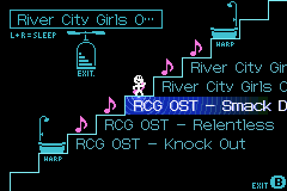
The Play-Yan let users search through their own folders to play music. You could organize albums or genres like this.
With my fake songs, I could start music playback, but nothing much really happened. The trackbar and the timestamp wouldn't update, but the Play-Yan would start some animations indicating that it was in Play Mode. I noticed a bunch of data being sent on the Play-Yan's I/O registers that didn't match any other pattern I had seen. More interestingly, however, was that they occurred whenever I took certain actions, such as raising the volume or trying to rewind or fast forward. It was at this point that I came to realize that the Play-Yan's software was issuing commands to the cartridge. These short, 16-bit commands appeared to take on a few parameters, such as the value to set the new volume and whatnot. I had GBE+ print out all commands it encountered so that I could get a better idea of exactly what they did. To my surprise, there were other commands elsewhere, such as during the boot process. Quite suspiciously, the number of commands sent matched the number of Game Pak IRQs GBE+ was forcibly pushing. The only conclusion I could draw was that certain commands sent to the Play-Yan also triggered Game Pak IRQs.
Until that point, the mechanism behind these Game Pak IRQs was unknown, so they just kinda happened whenever GBE+'s state machine said they were supposed to happen. GBE+ was basically playing a recording of the IRQs and their data on a timer, which didn't at all reflect how the Play-Yan actually functioned. After seeing the way commands and IRQs were related, I had to rebuild a lot of GBE+'s Play-Yan related code to accomodate the latest research. Now there was definitive logic behind each Game Pak IRQ, and I slowly built up a list of commands, their parameters, and how they affected the Play-Yan's operation. Little by little, the cartridge became less obscure and more structured.
After tackling the music menu, I decided to look into videos next. As with audio, the movie menu pulled a list of files from the SD card. The format of that data was the same, except for the file type flag, and it only accepted files with the .ASF extension. The Play-Yan received new commands for each video, which I assumed was to grab a thumbnail. The Play-Yan's hardware inside the cartridge was capable of natively decoding video files, rendering them into pixels the GBA could display, so it made sense that it had a dedicated command to grab one frame and show it as a preview for the user. I already had the Game Pak IRQ data the Play-Yan expected thanks to my viral homebrew, but I didn't supply any thumbnail data, so every preview looked like a solid black rectangle.
The GBA used a bitmap mode (BG Mode 3) for the video menu, since it had to display thumbnails with any number of colors. By taking a screenshot and measuring the inside frame of each video preview, I saw that the thumbnail was 60x40 pixels. The GBA uses 2 bytes to display 15-bit colors in that bitmap mode, so each thumbnail must have been pulling 4800 bytes from the Play-Yan. According GBE+'s logs, the emulator was trying to read from a new memory region after issuing each thumbnail command. Addresses within the 0xB000500 - 0xB0006FF range, therefore, had to return thumbnail pixel data. I added some code that would load a BMP file into GBE+ and convert those values into pixels for the GBA's bitmap mode. When GBE+ read from the above addresses, it picked up the thumbnail pixel data I had provided, and just like that, the emulated Play-Yan displayed a miniature preview.
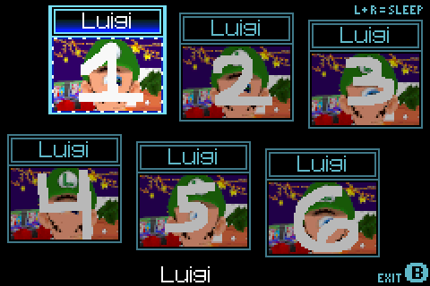
Cyclops Luigi (an old glitch from my NDS 3D renderer) was used for testing thumbnails.
Garage Games
The original Play-Yan was more than just a music/video player. It also supported games! Back when it was first released in early 2005, Nintendo decided to put up several so-called "Garage Games" on their website. These were downloadable files that users could put on their SD cards, which would then allow them to play small minigames on the Play-Yan. Specifically, they would appear as entries in the video menu, and when the user selected them, a tiny game would start in place of the thumbnail preview. Over the course of a few weeks, Nintendo would release new Garage Games on their site until a total of 13 had been published. Although these minigames were very small and limited, they still needed to be preserved.
At first glance, the Garage Games look like DLC. Users downloaded the file and then they were granted a minigame, pretty simple, right? Has to be DLC then? On closer inspection, however, that line of thinking doesn't hold up. First of all, downloading a binary file that could arbitrarily execute code on the GBA would have presented a major vector for potential piracy. Think about it for a moment; if users found a way to make their own payloads, they could trick the Play-Yan into running any code they wanted, including running things like homebrew and - dare I say it - ROMs. Combined with the massive storage space of SD cards (the Play-Yan supported up to 2GB, huge for 2005) that would have been a potential disaster, in Nintendo's eyes at least.
My initial thoughts were that the downloadable files for the Garage Games couldn't have contained GBA code, graphics, or sound. More likely, these files were meant to act as "keys" that unlocked content already stored in the Play-Yan's ROM. There was a lot of evidence pointing towards this theory. First, the files Nintendo released were simple videos in the ASF format. Anyone could download them and run them in a media player that supported them, like VLC. Second, the Play-Yan's ROM actually has a bunch of ASCII-encoded strings matching the names of the Garage Game files Nintendo put online. This suggested that the Garage Games were hardcoded into the Play-Yan's programming. To verify this, I put one of the Garage Games on my Play-Yan and tested it out. Later, I renamed the Garage Game file. If it was really its own executable, it should have run regardless of its name change. Instead, the Play-Yan treated it as if it were an ordinary ASF video. This proved that the Play-Yan was looking for Garage Games with specific filenames.
Next, I took a short video clip and converted it into the ASF format and gave it the same name as a Garage Game: "AVOID.ASF". If the Play-Yan only looked at filenames, my little 3 second video should have triggered the minigame to play. Unfortunately, this was not the case, and the Play-Yan ran it like a normal ASF file. This told me that the Play-Yan checked the filename, but it also wanted something more than that, something unique to the ASF files Nintendo hosted on their website. For my third and final test, I renamed an existing Garage Game file to that of another, in this case, "AVOID.ASF" now became "BAT.ASF". This gave the Garage Game a different name that the Play-Yan still should have theoretically accepted. The underlying data was unchanged from the website, so any other checks should have passed. To my surprise, the Garage Game played as a movie yet again.
Ultimately, what this investigation told me was that 1) the filename had to match an internal list checked by the Play-Yan, 2) some kind of other data from the file was necessary, and 3) whatever that data was, it was unique to each individual file. A couple of thoughts came to mind. Perhaps the Play-Yan was reading some metadata stored on the ASF files, maybe in some custom field that common video editing or conversion software wouldn't touch. It could have acted like a quick and easy fingerprint for the Play-Yan to work with. Another option was that the Play-Yan was looking for some sort of hash, running data from the files through an algorithm to get a single value that served as an ID. Both were plausible, but the idea of the Play-Yan using a hash seemed more likely. If the Play-Yan were requesting metadata about the video files, I would have captured evidence of that with my viral homebrew. However, the only data it pulled when launching Garage Games were the filename and thumbnail.
I suspected that the Play-Yan was just hashing the thumbnail data and checking that. It made perfect sense actually. With a decent enough hashing mechanism, it would be incredibly difficult for anyone to encode a random video whose thumbnail matched what the Play-Yan needed for a given Garage Game, and even more unlikely that the user would give it the same filename. That way, users could put almost anything on the Play-Yan without accidentally triggering a Garage Game, as the chances for doing so were extremely slim. After a few minutes of debugging, I found the relevant area of the Play-Yan's code used for the hash. Here, all 4800 bytes were being crunched through a formula that spits out a single 32-bit value when it's done. The Play-Yan basically does the following:
It's certainly no SHA256 or MD5. What it lacks in finesse it makes up for in simplicity and speed. The GBA can run this on its CPU fairly quickly. Although the hashing is quite basic, it came in handy later. The Play-Yan took this hash and pulled up a list from ROM to compare it too. This comparison only happens when the filename matches a valid Garage Game, so after a few rounds I was able to collect all 13 hashes for each minigame. Using the debugger in GBE+, I forced the hash comparison to always match, and after that point the Garage Game actually launched! For the first time ever (at least outside any of Nintendo's offices), the Garage Games were emulated. Despite how small and simple each of minigame is, it's still important to make sure these remain accessible to future generations. The Garage Games themselves offer an interesting look at one method Nintendo achieved "DLC" on the GBA. Their overall short and wacky vibes also call upon previous Nintendo software such as WarioWare and the Game Boy Camera.
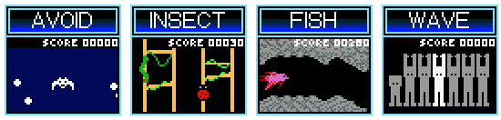
The Garage Games are only a tiny piece of gaming history, yet they still need proper archival and emulation!
Now that the way the Play-Yan unlocked Garage Games was fully understood, it was time to make the minigames more readily accessible in GBE+. They could be played when hacking the Play-Yan through the debugger, but that was a process done entirely by hand. A simpler and more authentic technique would have been to load a normal thumbnail just like real hardware. I could have used my viral homebrew to make exact copies of each of Garage Game's thumbnails, however, doing so would have meant I couldn't freely distribute them as part of GBE+'s data files due to copyright concerns. I wanted ease of use so that the user could just drop the thumbnails in a folder and have the Garage Games appear. In order to do this and avoid any legal issues, I'd have to make my own custom thumbnails that somehow matched the expected hashes.
To do this, the thumbnails would have to make use of something called hash collision. Hashes themselves are often significantly smaller than the data they represent. Take CRC32 for example, which uses just 4 bytes, meaning a total of 232 (4,294,967,296) unique hashes are possible. However, that's not nearly enough to cover all the possible combinations of bytes when the file size itself is larger than 4 bytes. Given the right sets of data, two completely distinct files could share the same CRC32 code. The pool of individual hashes is just too small to cover every possible file out there, so this overlap of hashes exists. Normally, this isn't an issue when doing things like checking file integrity via hashes if the hashing method is well designed, and in practice it works well enough for most everyday purposes. Typically when hash do collisions occur, you can expect at least some of the data to be garbage. For example, the likelihood that you'd randomly download a fully functional PDF with the same MD5 hash as one of your old essays from school is substantially low. It's definitely possible, but unless you're being maliciously targeted by hackers or something, you wouldn't expect to see it in the wild.
The Play-Yan's hashing method is pretty unsophisticated, making it prone to brute-force attacks where one can take their own data, change a few bytes here and there, and generate a hash that matches any of the Garage Games. By exploiting this kind of hash collision, GBE+ can use just about any custom thumbnail and unlock the minigames. A brute-force attack on the Play-Yan's hashing algorithm is relatively trivial. In essence, for each pixel, it's just taking a 32-bit value, adding a 16-bit value, and then rotating the new 32-bit value bitwise left by 1. At a minimum, if a custom thumbnail changed 32 pixels correctly, it'll produce any hash desired.
I created my own thumbnails (based on my amazing art skills as a programmer) that mimicked the originals visually, however, I left the last 32 pixels blank, i.e. completely black. This image gave me a base hash to work with, and from here the goal was to slowly change it to match that of a given Garage Game. The easiest means of doing this, at least as I saw it, was to change 4 separate pixels every 8 pixels and leave the rest blank. Each changed pixel would only use 8-bits of data instead of 16-bits. Given how the Play-Yan's hashing algorithm rotates, that means thumbnail's hash is changed 8-bits at a time (the blank pixels don't change the hash, as their data is all zeroes). So gradually, the 1st, 2nd, 3rd, and 4th 8-bit segments of the 32-bit hash get rewritten. Calculating the difference between the base hash of the custom thumbnail and the hash Garage Game, determines the 8-bit value of the pixel to use. And just like that, we have ourselves an imposter!
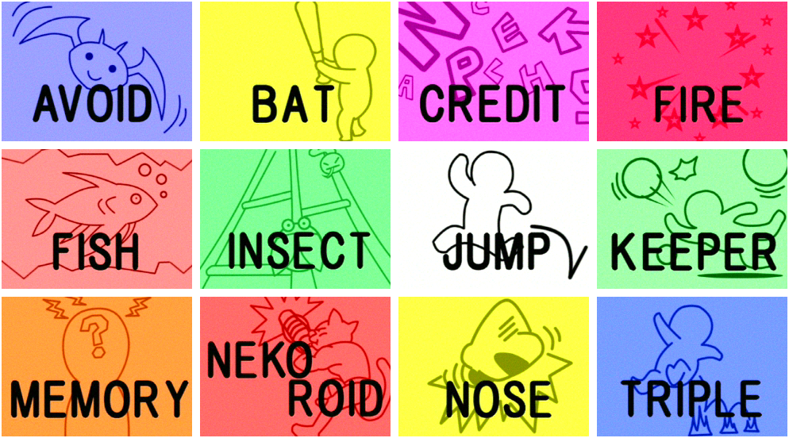
These are definitely not counterfeit thumbnails. Totally legit. 100% real. Buy them today!
File Management
There was still a lot of work to do around music and video files. While I could play dummy MP3 files, there were a couple of issues. First of all, the trackbar and timestamp wouldn't update. It constantly said 00:00:00, so not very realistic to how the Play-Yan operates. Going back to my viral homebrew, I tried capturing data from a real Play-Yan as it played music. This was problematic; as I mentioned earlier, my homebrew would cause the Play-Yan to freeze up at times, particularly when large amounts of Game Pak IRQs were generated. Music and video processing basically bombarded the Game Boy with such interrupts, meaning I was only able to record a very tiny portion of data right when the music started. It wasn't much but it was at least something. The command to play a particular music file continuously generated Game Pak IRQs, and the Play-Yan only seemed to read the 32 bytes of data the interrupt left at the 0xB000300 - 0xB00031F address range. So whatever the Play-Yan was using for timestamp and trackbar position was in this limited area.
Through a very elaborate and highly scientific process of pure trial and error, a found out which bytes controlled what. The trackbar was a single 32-bit value that the Play-Yan divides by 0x6400. The closer the value is to 0x6400, the closer the trackbar moves from left to right. The timestamp was another 32-bit value. It simply returned the current play time in seconds. For example, a value of 0x3C represents 1 minute, or 00:01:00. At this point, GBE+ could emulate some of the functionality of the SD card, in that users could place a music and video files in a folder and the emulator would pull up their filenames. For MP3 files, it could also convert the audio into WAV format (like the GBA Music Recorder) and calculate the length of a song. With all of this combined, GBE+ could now recreate trackbar and timestamp progression accurately. With a bit more work, the fast forward and rewind commands were implemented too. The only thing GBE+ didn't do was actually output sound. More on that later, however.
The last remaining thing was ID3 data. MP3s have all sorts of metadata that can describe the artist, genre, track number, year of publishing, and more. The Play-Yan has the ability to read and display the song's title and the artist from these ID3 tags. Unfortunately, I couldn't figure out how this was done, at least not right away. I thought the command used to read filenames would have that data, but I never captured anything like that. At this point in my research, a number of commands the Play-Yan used still had unknown purposes. By chance, I found that one of them was reading data from the SD card, something I hadn't noticed before. This command always came before playing the music file, so it looked promising. Using GBE+'s debugger, I traced when and where the SD card data was read and started altering bytes to ASCII letters as a test. To my surprise, those same letters appeared on-screen where the song's title should have been. With a bit more probing, I figured out the format of the data, which was essentially 2 null-terminated strings. Grabbing ID3 data from MP3s doesn't involve a great deal of work; all it took was handful of lines of code and GBE+ was capable of parsing that data by itself. Interestingly enough, while the Play-Yan supports ID3v1 through ID3v2.4, certain character encodings are not supported.
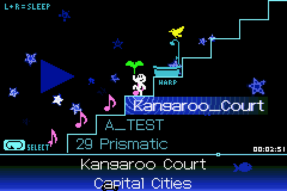
It actually took a lot of work just to get this much stuff functional, even without actually playing any real sound.
Next up were timestamps and progress bars for videos. Like music files, my viral homebrew constantly froze up due to large volume of Game Pak IRQs during video playback. At times, however, I managed to get a sizable amount of data extracted. This was just fractions of a second of video, but it proved sufficient. Here only one 32-bit value from the Game Pak IRQs was used to calculate both the timestamp and the trackbar's position. This value represented the current playback of the video in milliseconds. Updating this value on an interrupt advanced the timestamp, but the trackbar remained stubbornly immobile. As it turns out, the Game Pak IRQ for a video's thumbnail returns a small amount of metadata for the entire length of the video in milliseconds. GBE+ was naively setting that value to zero, so of course the Play-Yan's software wouldn't move the trackbar. Once this was sorted out, videos had fully working trackbars and timestamps.
Of course, GBE+ didn't have the ability to play movies just yet. For the time being instead, it just faked dummy data: a blank screen that lasts for 10 seconds. The mechanism for actually displaying video data wasn't difficult to figure out. The same Game Pak IRQs that update the timestamp and trackbar also cause the Play-Yan to read large amounts of data from the 0xB000500 - 0xB0006FF address range. This is the same area of memory that the Play-Yan uses to read thumbnail data, so naturally I assumed this is where it pulled video data as well. All in all, the Play-Yan reads 76800 bytes, which comes out as a 240x160 image using 16-bit pixels. The Play-Yan automatically decodes video frames into a data format the GBA can copy+paste into VRAM and display using a fullscreen bitmap mode. All the expensive computational is done inside the Play-Yan using its custom hardware, so all the GBA's CPU has to do is wait for data to arrive. GBE+ doesn't currently playback any video, but this can easily be done now that all of this is understood.
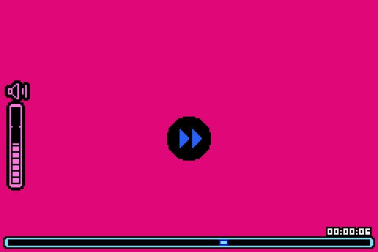
Real video playback is TODO. Soon, however, we'll have videos of dancing cats on GBE+, the future we all deserve.
The last bit of work needed to make Play-Yan emulation to feel decent was handling files and folders. For music files, the Play-Yan lets users organize their tracks via folders. These can be navigated via the music menu, allowing the user to traverse up and down different directories. GBE+ only handled music files as if they were all stored in the SD card's root directory. To change this, GBE+ had to actually start scanning real folders and files just like the Play-Yan. Once again, modern C++'s filesystem functions came to my rescue and made it possible to do just that. It took a fair number of adjustments to properly code it, but the result was that GBE+ recursively scanned everything as the Play-Yan would. With that, users could make their own folders, add music tracks, and see that represented by the emulator. Aside from actual audio/video playback, emulation of the Play-Yan was mostly complete. Even so, there was still one other area I wanted to tackle.
Micro Management
Not long after the original Play-Yan launched, Nintendo decided to produce a second version later that year. This update coincided with the arrival of the Game Boy Micro, and thus the Play-Yan Micro was born. For all intents and purposes, it was an exact copy of the original Play-Yan in shape, size, look, and operation. Under the hood, it ran newer firmware that allowed the cartridge to play MP4 files natively (whereas the original Play-Yan needed to manually update its firmware every time it booted). The interface was completely overhauled, and the Garage Games were sadly stripped away. Overall, the Play-Yan Micro was mostly just more up-to-date software package. On a technical level, it functioned just like its predecessor: all of the I/O registers was the same, the commands were the same, the Game Pak IRQs were the same, the data it works with was the same. So with that in mind, it should have booted up just fine in GBE+, right?
Nothing is ever simple when emulating the unknown, and the Play-Yan Micro made no exceptions. It started to run in GBE+, only to just get stuck. It handled the first stage of copying firmware from ROM just fine, then it verified the copy operation. GBE+ manually triggered the first Game Pak IRQ to signal that firmware operations were complete. After that, however, when I expected the Play-Yan Micro to start sending commands, nothing happened. The code was seemingly caught in a loop waiting for something. This was quite confusing, as I didn't think the Micro version was a huge deviation from the original. Was it really doing something so drastically different? Curious about the matter, I logged all reads and writes to a text file and went through the very last sections to see if anything looked odd. As it turned out, the Play-Yan Micro was doing something kinda sneaky.
It was indeed trying to write some data in order to start sending commands. Unfortunately for me, the Play-Yan Micro was doing it in a way I never anticipated. On the original Play-Yan, commands and parameters are written to addresses within 0xB000100 - 0xB0002FF. On the Micro version, it only wrote data to 0xB000000 - 0xB000001 in 16-bit pieces. The data the Play-Yan Micro data wrote ultimately matched what the original Play-Yan sent, it just seemed to be using an entirely separate interface. I dubbed this the "serial interface" because the all of the command data was written one part at a time to the same address. Once I understood how the serial interface worked, I added code in GBE+ to detect and handle it. Now that the emulator recognized the Play-Yan Micro's commands, it could respond with the appropiate Game Pak IRQs.
Things were looking good and more parts of the boot-up animation played. A new problem arose now: a previously unrecognized command that seemed to halt everything. Apparently, without the proper data, the Play-Yan Micro refused to go any further. The mysterious command in question, 0x3000 came with a single ASCII string parameter, the contents of which read "play_yanmicro.ini". The Play-Yan Micro added a feature where some configuration options could be stored in and accessed from a text file. The online documentation refers to it as a "key file", but it's really just a regular INI file that controls things like default volume, what order to play audio/video (sequential, random, looped), default video brightness, etc. It appeared that the emulated Play-Yan Micro was trying to grab this file.
At first, I didn't return any data besides the most basic bytes to get the Game Pak IRQ for the 0x3000 command working. After taking care of that, two more commands came in: 0x3001 and 0x3003. I assumed they dealt with the INI file, but for the time being I simply stubbed them with enough data to get the IRQ functional. Once those 3 commands were handled on a barebones level, the Play-Yan Micro managed to fully boot up! The little intro animation played and allowed me to enter the main menu. A slashed-out key icon appeared during this process, indicating that I wasn't handling the INI commands correctly, but the Play-Yan Micro didn't seem to care too much.
Before testing out the rest of the Play-Yan Micro, I wanted to get those new commands working properly. The first one, 0x3000, seemed pretty easy to deal with. After messing around with the command's output in GBE+'s debugger, I found it only required a simple flag. If the flag was zero, it seemed to indicate that the key file was present. Any other value told the Play-Yan it couldn't find "play_yanmicro.ini". The next one 0x3001 was a bit more complicated. Looking at the Play-Yan Micro's code, I determined that it wanted several values returned from the Game Pak IRQ. One was yet another flag; its purpose appeared to determine if the Play-Yan had opened the file. The second value was the actual file size. The 0x3001 then read a series of bytes from the SD card interface, and the amount of bytes matched the file size, thus it was trying to read the binary contents of the file. There was no need to try and guess what kind of data was in the key file, as Nintendo provided an example on their website. All GBE+ had to do then was read that text file and give the Play-Yan its values when reading from the SD card. This manages to preserve an authentic experience for configuring the Play-Yan Micro, as users can make adjustments to that text file and observe the changes in the emulator.
The last command, 0x3003 didn't accept any kind of data from a Game Pak IRQ or the SD card. It seemed like it was just a way for the Play-Yan to close the file it had previously opened and read, so no special handling was required except generating an interrupt. As I said, nearly all of the Play-Yan Micro's commands functioned exactly the same as the original, so everything mostly just worked. Kind of. Sort of. One of the commands had a very, very subtle difference that prevented any of the menus from properly displaying. The 0x200 command grabbed the names of all files or folders within a directory. It read a massive amount of data from the SD card that contained such information. Each file or folder occupied a 268-byte portion of that large data chunk on the original Play-Yan. As an emulator, GBE+ has to fill in this data correctly for the Play-Yan's software to use it. On the Play-Yan Micro, for whatever reason, the SD card data is divided into slightly larger 272-byte pieces. Perhaps the extra 4-bytes is used for some kind of metadata or additional flag. At any rate, it didn't have any obvious impact on the Play-Yan Micro.
With that, Play-Yan Micro emulation was on par with the OG version. Both ROMs booted up free of issues, could browse media from a local folder and treat that as if it were a real SD card, could play dummy music and video files, and present information like thumbnails and ID3 tags. The Play-Yan Micro wasn't a a major depature from its predecessor by any means at all. Even so, I quite enjoyed getting it up and running. It was familiar enough to quickly grasp, yet it still offered a few unique challenges to deal with. It's a shame the Garage Games were removed from the later model. There's no discernable reason why they couldn't have been brought over. Maybe Nintendo simply didn't feel like it was worth it. What's even odder is that the Play-Yan Micro is relatively more common than the first version, so many people were left out of the experience.
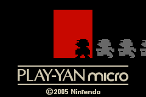 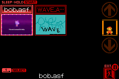
Season 2
Emulating the Play-Yan involved a great deal of hard work. Out of all the things I have researched, probed, and successfully cracked, these little cartridges were by far the most difficult. They also took the longest time to make any sort of progress, even when I seriously focused on them. Although the Play-Yan has been reborn on the PC, only one part of the job is finished. GBE+ still needs to play audio and video. As with the GBA Music Recorder, handling sound isn't much trouble. Video, on the other hand, is in a different league. GBE+ will have to gain some new infrastructure to do that correctly. Even so, it's something I have a plan for. Expect to see more about that when and article for Part 2 pops up eventually.
Did I mention there's also another Play-Yan variant that came out after the Micro version? The Nintendo MP3 Player is something like a cousin to the Play-Yan, falling under the same AGS-006 family. Released exclusively in Europe, it had the same interface and utility as the Play-Yan Micro, except it didn't play video at all. As a result, it had brand new hardware on the cartridge's PCB, and the way it handles I/O is completely different from either Play-Yan. Thanks to endrift, the author of mGBA, I've acquired a cartridge to run all kinds of experiments on. With a bit of time and patience, we'll finally pry open whatever secrets lie inside.
Did I mention there's also another Play-Yan variant that came out after the Micro version? iQue MP4 Player was a version of the AGS-006 exclusive to China and released at the end of 2005. All evidence points to it being a copy+paste version of the Play-Yan Micro localized for that region. It shouldn't technically do anything the other Play-Yans don't. The caveat here is that no one really knows anything about it. That's because it's one of the few GBA titles that remains undumped to this very day. No one's extracted the ROM and taken a peek at what it's doing. In my expert opinion, it's just the Play-Yan Micro with a new language, but we can't really say for sure until it's been investigated. On that note, I would invite anyone with any knowledge about the iQue MP4 Player to help get this cartridge dumped and preserved. Only then will I be able to sleep at night!
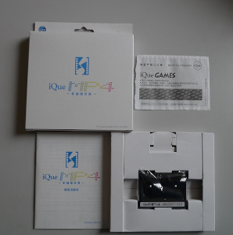
If you or a loved one have ever been exposed to the iQue MP4 Player, contact us immediately at 1-800-ROM-DUMP.
At any rate, we've hit a major milestone when it comes to the Play-Yan. Most of the work is pretty much done, and just a few more efforts remain before it's fully complete. The bulk of everything should be covered so far, and I'm more than pleased by what's been achieved so far. So what exactly is the status of the so-called "Triforce of Terror" that I mentioned in the last article? Three cartridges that were so mind-boggling difficult to emulate, they've been rumored to drive programmers to tears of madness? As I said, these are the last pieces of hardware standing between us and being able to emulate every single officially licensed device on the GBA. These days... they're not actually looking to be so tough.
A lot of the mystery behind the Play-Yan family has been removed. The GlucoBoy was recently found, dumped, studied, documented, and has been emulated in GBE+ since this July. I've been tearing through the Campho Advance for the past few months; the ROM has been finally been fully dumped, and most of the weird things about the cartridge have been figured out. The only remaining feature left is the telephony part. So yeah, they're not quite as terrible as I made them out to be. Nevertheless, they're the last bastions of unknown hardware on the GBA. You can technically emulate all of these now, today, but with just a bit more research, we'll have them completely conquered. I'm a little bit very behind on writing new Edge of Emulation articles, but I'll try to push as much as I can to make up for lost time. Next month, we'll dive into the next "Terror", the only Game Boy cartridge that ever demanded the player's blood!
Addendum - December 13, 2023
This article originally stated that the Play-Yan only supported ID3v1 through ID3v2.4 and no later version. ID3v2.4, however, is the latest version. There was a mix-up with some draft text and early notes from my research. The statement now correctly says that while all ID3 versions are supported, not every character encoding is supported.
This article mentioned the iQue MP4 Player as being an undumped Chinese version of the Play-Yan. It has since been brought to my attention that the iQue MP4 Player is an exact 1:1 copy of the original Play-Yan. The ROM file is unchanged; only the manual and packaged were localized. Thankfully, there is nothing special about this version in terms of emulation.
{kind=link}
{kind=link}